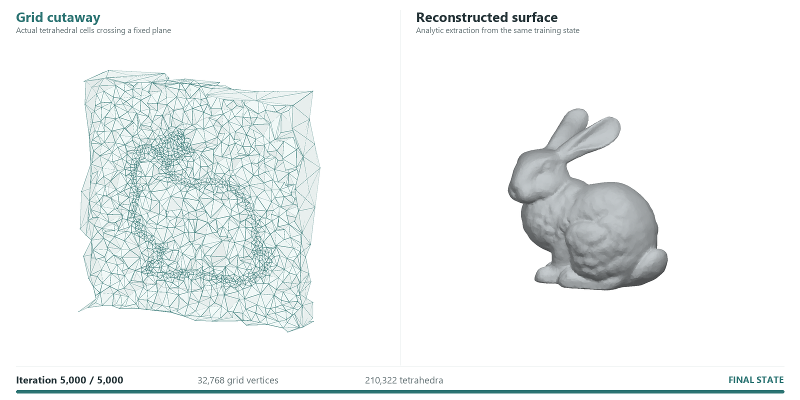
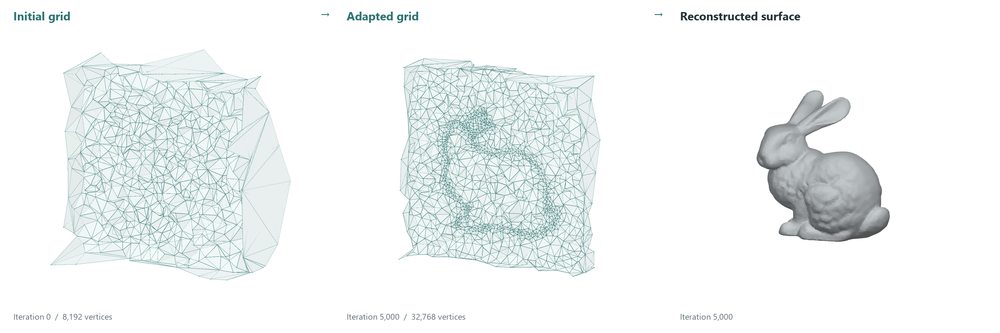
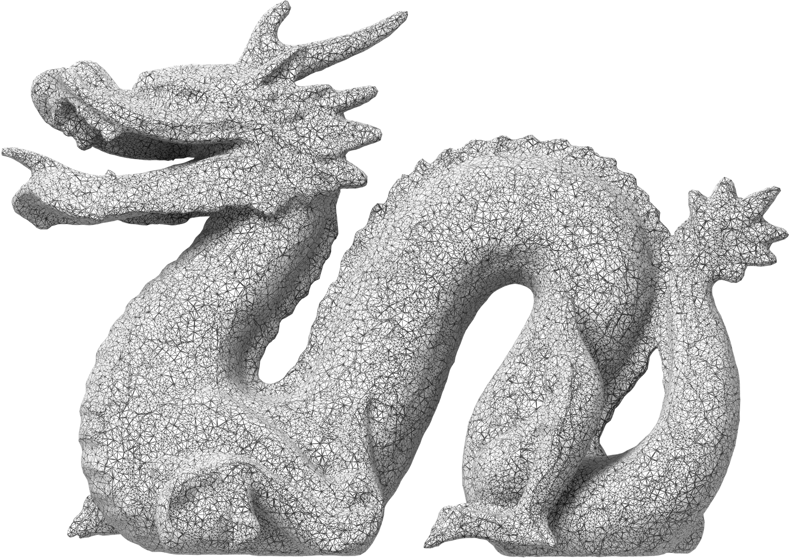
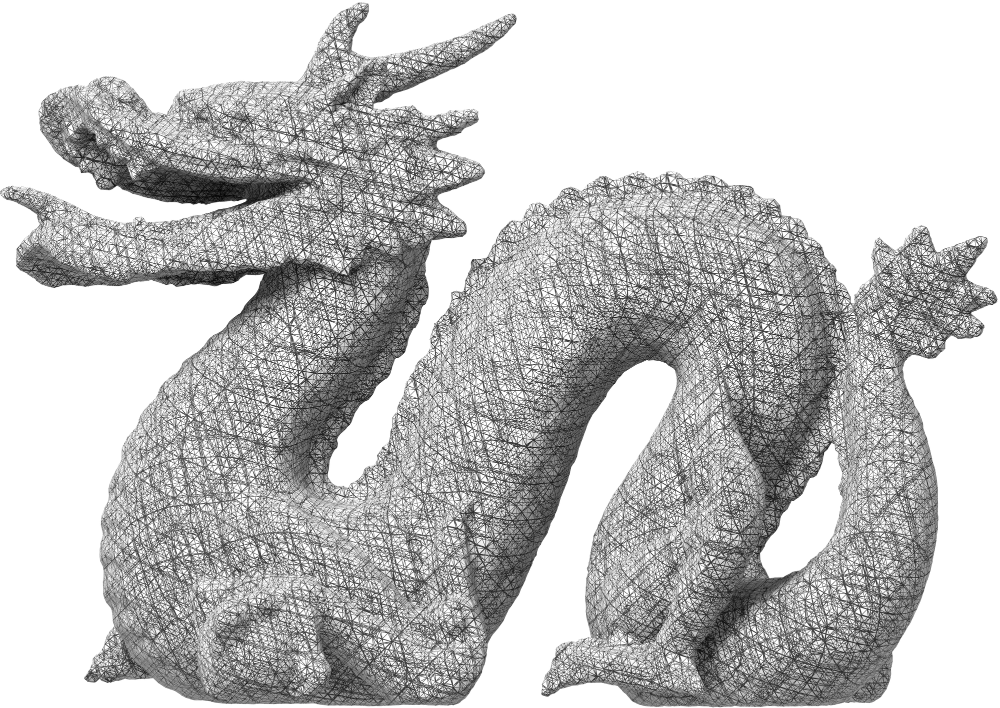
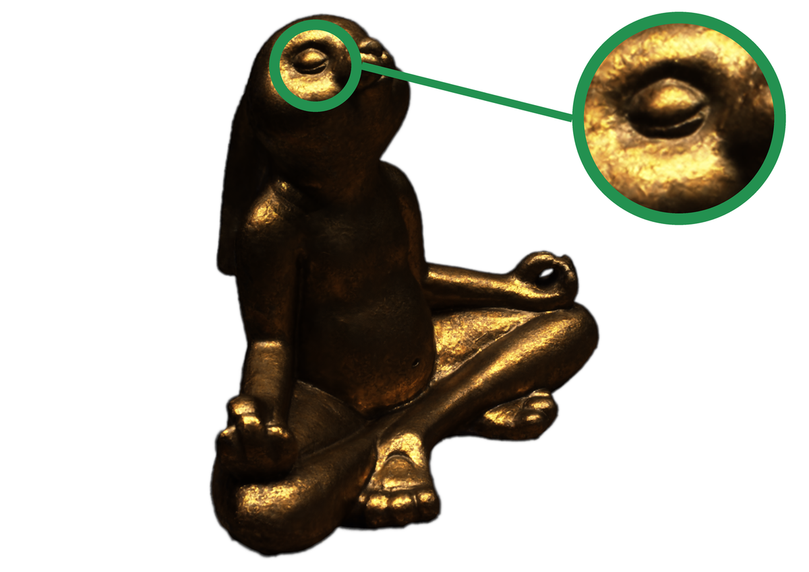
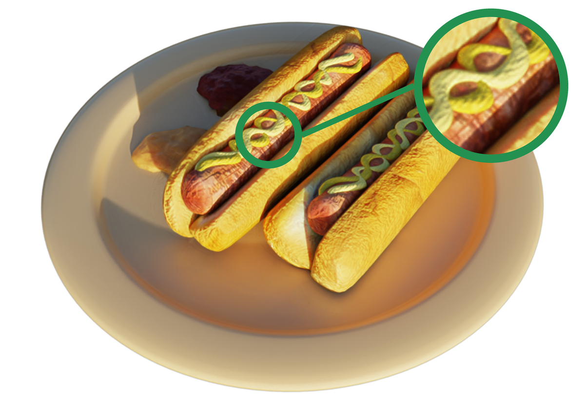
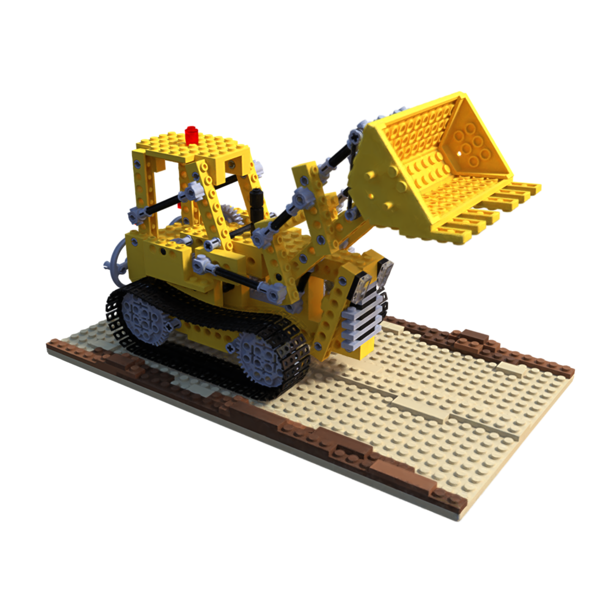
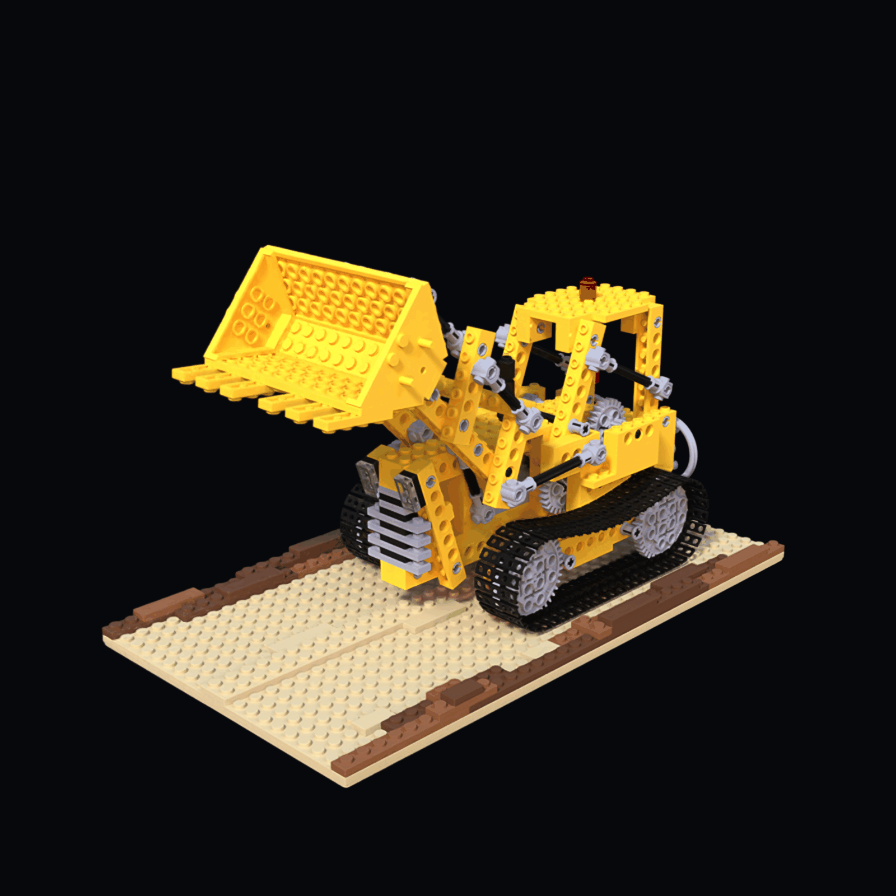
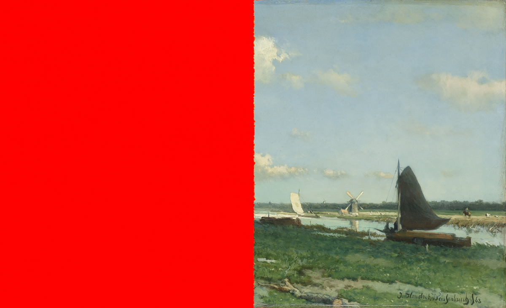
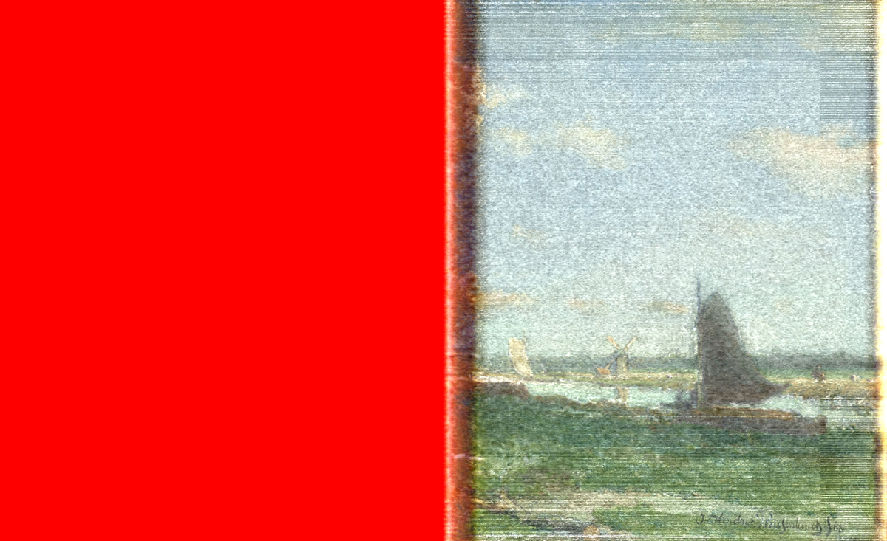

Abstract
Implicit and explicit representations of geometry are central in computer graphics applications and come with pros and cons. With surface sampling being faster on explicit representations and spatial queries being faster on implicit representations, finding efficient conversions between them is a highly desirable property. We present TetraCoder, a single-resolution hash-free adaptive tetrahedral encoding that links an explicit tetrahedral spatial encoder with an underlying implicit signed distance field (SDF). The resulting hybrid implicit-explicit space is continuous piecewise affine (CPWA) by design, yielding an exact correspondence between the implicit SDF and the explicit analytic mesh. TetraCoder's design comes with additional perks, in particular: (a) it scales better than multiresolution encoding methods due to its single-resolution optimizable grid, (b) unlike hash-based methods, it is not affected by collisions and (c) it enables fast tetrahedral ray-tracing, geometry and appearance editing, directly through its adaptive tetrahedral scaffold. We demonstrate the versatility of TetraCoder by showing an improvement over state-of-the-art methods on multiple tasks: 2D/3D fitting from images and point clouds, 3D novel view synthesis, 3D reconstruction, and geometry/appearance editing.
01 / The encoder
Adaptive tetrahedral encoder
Each grid vertex stores a position and a learned feature vector. To encode an input point, we first locate the tetrahedron containing it, then use barycentric weights to interpolate the learned vertex features.
TetraCoder adapts local vertex capacity through densification, pruning, and vertex movement. Composing the encoding with affine layers and ReLU activations preserves its continuous piecewise-affine structure, enabling analytic mesh retrieval from the learned field.
Watch the encoding adapt

View the initial and final states side by side

02 / Toy image fitting
Toy 2D image fitting
TetraCoder fits an image into the weights of a small MLP, starting from 2D coordinates alone. It achieves higher PSNR with fewer parameters than multiresolution hash encoding.
- PSNR ↑
- 50.31 dB
- Parameters ↓
- 5.75 M
- PSNR ↑
- 59.81 dB
- Parameters ↓
- 3.61 M
Double-click to zoom · Drag to pan when zoomed · Drag the divider to compare
Ctrl/⌘ + scroll also zooms. With the image focused, use + or − to zoom, arrow keys to pan, and 0 or Escape to reset. Both methods stay aligned.
03 / Geometry-supervised reconstruction
3D point cloud to mesh
Analytic surface reconstruction on five meshes from the Stanford 3D Scanning Repository. Compare TetraSDF Large, Marching Cubes, and TetraCoder.

TetraCoder Ours
Double-click to zoom · Drag to pan when zoomed · Drag the divider to compare
Surface quality and extraction
| Method | CD ↓× 10⁻³ | Extraction ↓seconds | Parameters ↓millions | Delaunay edges ↑% | Skinny triangles ↓% | SSDF ↓ | VSDF ↓ |
|---|---|---|---|---|---|---|---|
| TetraSDF Large | 1.718 | 2.859 | 16.778 | 82.37 | 19.55 | 0.076 | 0.078 |
| TetraCoder | 1.611 | 0.446 | 5.221 | 83.50 | 9.14 | 0.027 | 0.027 |
Identical geometry supervision and 5,000 training updates. CD: Chamfer Distance. SSDF and VSDF measure mesh–field agreement.
04 / Novel view synthesis
3D scene reconstruction from images
TetraCoder jointly learns geometry and view-dependent appearance from a collection of RGB images. Its single-level adaptive tetrahedral grid supports both novel-view synthesis and explicit mesh reconstruction within the same representation.


| Method | PSNR ↑dB | SSIM ↑ | CD ↓mm |
|---|---|---|---|
| Tetra-NeRF | 29.71 | 0.948 | 14.24 |
| NeuMesh++ | 32.32 | 0.955 | — |
| NeuS2 | 31.58 | 0.953 | 4.10 |
| Instant-NGP | 32.75 | 0.960 | 4.71 |
| TetraCoder | 33.27 | 0.969 | 3.93 |
| Method | PSNR ↑dB | SSIM ↑ | CD ↓mm |
|---|---|---|---|
| Tetra-NeRF | 27.09 | 0.905 | 2.65 |
| NeuMesh++ | 28.39 | 0.940 | — |
| NeuS2 | 32.14 | 0.938 | 0.711 |
| Instant-NGP | 32.27 | 0.942 | 1.77 |
| TetraCoder | 32.34 | 0.943 | 0.705 |
CD: Chamfer Distance. A dash denotes an unreported value.
05 / Editing
3D scene editing
Starting from a trained scene, TetraCoder supports geometry and appearance editing on the tetrahedral encoder grid, without retraining.

Geometry editing
TetraCoder edits geometry by moving its grid vertices while keeping the learned features, tetrahedral connectivity, and geometry decoder fixed.

Local edits, limited spillover
Local edits introduce limited changes outside the intended region. Here, the left half is painted red.

TetraCoder Ours
Hash encodingDouble-click to zoom · Drag to pan when zoomed · Move the divider up or down to compare
| Edited region% | 2D · TetraCoder ↓MSE × 10⁻² | 2D · Hash ↓MSE × 10⁻² | 3D · TetraCoder ↓MSE | 3D · Hash ↓MSE |
|---|---|---|---|---|
| 20 | 0.048 | 0.536 | 0.000 | 0.055 |
| 40 | 0.040 | 0.655 | 0.001 | 0.139 |
| 60 | 0.043 | 0.942 | 0.001 | 0.091 |
| 80 | 0.160 | 2.221 | 0.003 | 0.155 |
Values are shown at the paper’s reported precision.
Editing latency
| Method | Geometry edit ↓ms | Appearance edit ↓ms | Rendering ↑FPS |
|---|---|---|---|
| NeuMesh | ~99,001 | ~5.59 × 10⁶ | ~0.01 |
| NeuMesh++ | ~1,067 | ~1,067 | ~15 |
| TetraCoder | 56.7 | 60.4 | ~30 |
Geometry and appearance editing latencies include the edit-update time plus the time to render one 800 × 800 image. Appearance editing refers to texture painting.
More demonstrations
Reference
BibTeX
@misc{dellapietra2026tetracoder,
title = {TetraCoder: Adaptive Tetrahedral Encoding for Neural Fields},
author = {Daniele Della Pietra and Antonella Rech and
Nicola Conci and Nicola Garau},
year = {2026},
eprint = {2611.18267},
archivePrefix = {arXiv},
primaryClass = {cs.GR},
doi = {10.48550/arXiv.2611.18267},
url = {https://arxiv.org/abs/2611.18267}
}